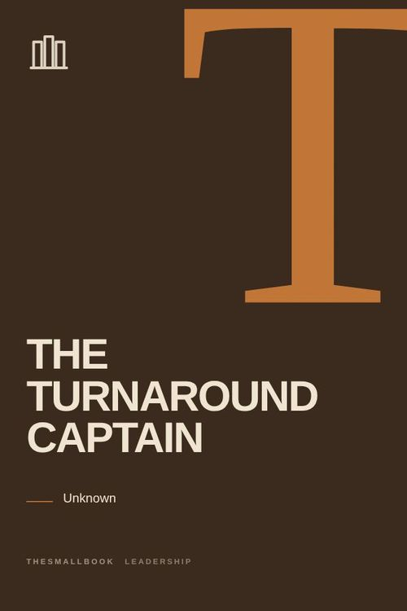

Why Did The Triangle Shirtwaist Fire Fail?
Locked Doors, 146 Dead
What happened
On 25 March 1911, near closing time on a Saturday, fire broke out on the eighth floor of the Asch Building in New York, home of the Triangle Waist Company, employing some 500 workers, mostly young immigrant women, making shirtwaist blouses. The factory floors were crowded with flammable cloth, cuttings littered the floor, smoking was common despite rules, and exit doors opened inward or were kept locked to prevent theft and unauthorised breaks. The fire escapes collapsed under fleeing workers; elevators stopped; the hose on the ninth floor found no water pressure to matter. One hundred and forty six workers died in eighteen minutes, many leaping from windows before crowds of helpless onlookers because the ladders of the fire department reached only to the sixth floor. Owners Blanck and Harris were tried for manslaughter and acquitted, later settling civil claims for a fraction per life. The outrage built modern workplace safety: New York's Factory Investigating Commission, led by Al Smith and Robert Wagner and staffed by a young Frances Perkins, drove dozens of laws on exits, sprinklers, drills and inspections that became the national template. Frances Perkins, watching the fire, later built the New Deal's labour protections.
The fatal mistake
Every element of the deaths was a management decision wearing the costume of an accident. Doors locked against theft valued blouses over the women sewing them; the owners had insured the stock far more carefully than the staff. Fire drills were resisted as lost production, escapes went unmaintained, and the building's legal compliance was itself compliant with a code that had been written for property, not people. The owners had also recently broken a strike demanding, among other things, safer conditions, so the disaster arrived pre argued: the workers had itemised their own deaths as grievances and been refused. The acquittal then demonstrated that criminal law, like the building code, had not yet been designed to see them.
The lesson
If your exits are locked for security, you have published your true valuation of the people inside. Safety demands made by workers are inspection reports delivered free; refusing them is recorded, eventually, by other means. Insurance is not safety: the Triangle owners recovered more for the building than the families did for the dead, an arithmetic the law has spent a century correcting. And reform follows atrocity unless institutions learn to move on evidence instead of funerals; Frances Perkins spent a career trying to make her country legislate before the fire, not only after it.
The antidote book

Anyone can steer in fair weather. This book is for the day you are handed the wheel in a storm: the diagnosis, the triage, and the courage a turnaround actually takes.
READ THE SUMMARY OPEN INTERACTIVE BOOKQuestions people ask about The Triangle Shirtwaist Fire
Why did The Triangle Shirtwaist Fire fail? Every element of the deaths was a management decision wearing the costume of an accident. Doors locked against theft valued blouses over the women sewing them; the owners had insured the stock far more carefully than the staff. Fire drills were resisted as lost production, escapes went unmaintained, and the building's legal compliance was itself compliant with a code that had been written for property, not people. The owners had also recently broken a strike demanding, among other things, safer conditions, so the disaster arrived pre argued: the workers had itemised their own deaths as grievances and been refused. The acquittal then demonstrated that criminal law, like the building code, had not yet been designed to see them.
How much was lost? 146 workers, mostly young women, behind locked doors
What is the lesson? If your exits are locked for security, you have published your true valuation of the people inside. Safety demands made by workers are inspection reports delivered free; refusing them is recorded, eventually, by other means. Insurance is not safety: the Triangle owners recovered more for the building than the families did for the dead, an arithmetic the law has spent a century correcting. And reform follows atrocity unless institutions learn to move on evidence instead of funerals; Frances Perkins spent a career trying to make her country legislate before the fire, not only after it.
The Triangle Shirtwaist Fire kyun fail hua? In simple English: Every element of the deaths was a management decision wearing the costume of an accident. Doors locked against theft valued blouses over the women sewing them; the owners had insured the stock far more carefully than the staff. Fire drills were resisted as... The cost was 146 workers, mostly young women, behind locked doors.
Keep digging
More historical failures · Open the full Graveyard
Read the antidote book summary: The Turnaround Captain
Related failures
- Why did The Churning of the Ocean fail? ~5000 BCE (epic) · The Great Co-operation That Produced the Poison First
- Why did The Nanda Empire fail? ~321 BCE · The Richest Empire in India, Lost Because the King Couldn't Keep a Promise
- Why did The Kurukshetra War fail? ~3000 BCE (epic) · The War Everyone Wanted That Destroyed Everyone Who Wanted It
- Why did The Harappan Collapse fail? ~1900 BCE · The Advanced Civilization That Vanished Into Its Own Success
- Why did Easter Island fail? ~1600 · They Cut Down the Last Tree
- Why did Qin Shi Huang fail? 210 BC · The Emperor Who Drank Immortality to Death
They paid full price. You get the lesson in simple English.